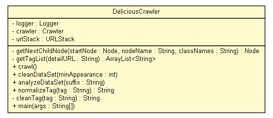

tud.iir.web.datasetcrawler
Class DeliciousCrawler

java.lang.Object
 tud.iir.web.datasetcrawler.DeliciousCrawler
tud.iir.web.datasetcrawler.DeliciousCrawler
public class DeliciousCrawler
- extends java.lang.Object
The DeliciousCrawler creates a data set of web pages with delicious tags. This data set can then be used as training data for the web page
classifier.
|
Method Summary |
static void |
analyzeDataSet(java.lang.String suffix)
|
static void |
cleanDataSet(int minAppearance)
Read the data set, clean it and write the output to a new file. |
private static java.lang.String |
cleanTag(java.lang.String tag)
|
void |
crawl()
|
private org.w3c.dom.Node |
getNextChildNode(org.w3c.dom.Node startNode,
java.lang.String nodeName,
java.lang.String classNames)
|
private java.util.ArrayList<java.lang.String> |
getTagList(java.lang.String detailURL)
|
static void |
main(java.lang.String[] args)
|
static java.lang.String |
normalizeTag(java.lang.String tag)
Normalize vocabulary. |
| Methods inherited from class java.lang.Object |
clone, equals, finalize, getClass, hashCode, notify, notifyAll, toString, wait, wait, wait |
logger
private static final org.apache.log4j.Logger logger
crawler
private Crawler crawler
urlStack
private URLStack urlStack
DeliciousCrawler
public DeliciousCrawler()
getNextChildNode
private org.w3c.dom.Node getNextChildNode(org.w3c.dom.Node startNode,
java.lang.String nodeName,
java.lang.String classNames)
getTagList
private java.util.ArrayList<java.lang.String> getTagList(java.lang.String detailURL)
crawl
public void crawl()
cleanDataSet
public static void cleanDataSet(int minAppearance)
- Read the data set, clean it and write the output to a new file.
- Parameters:
minAppearance - Number of times a tag must appear in order to keep it.
analyzeDataSet
public static void analyzeDataSet(java.lang.String suffix)
normalizeTag
public static java.lang.String normalizeTag(java.lang.String tag)
- Normalize vocabulary.
For example, blogs => blogs / musica, musik => music / e-learning, learning => learn
- Parameters:
tag - The tag that should be normalized.
- Returns:
- The normalized tag.
cleanTag
private static java.lang.String cleanTag(java.lang.String tag)
main
public static void main(java.lang.String[] args)
- Parameters:
args -